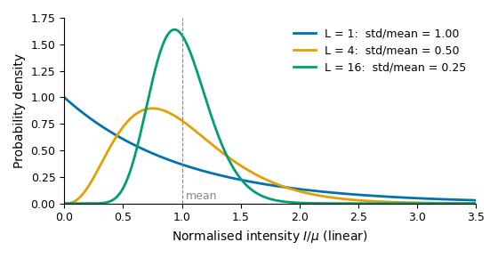

| SAR Concepts: Speckle and Multilooking | |
Speckle is the grainy texture of every SAR image. It is not noise from the sensor but the interference of echoes from many scatterers inside one resolution cell, and it makes a single pixel a poor estimate of the backscatter. Multilooking and speckle filters trade spatial detail for radiometric precision; how you make that trade decides what you can measure.
A resolution cell of a natural surface holds many elementary scatterers: soil clods, leaves, branches. Their echoes add as complex numbers with effectively random phases, so the sum is a random walk in the complex plane. Small changes in viewing geometry change the sum completely. When no single scatterer dominates, speckle is fully developed: the complex signal is circular Gaussian, the amplitude is Rayleigh distributed, and the intensity I is exponential:
p(I) = (1/μ) · exp(−I/μ)
μ is the mean intensity, proportional to the backscatter coefficient. The standard deviation equals the mean: about 10% of single-look pixels fall below a tenth of the true value, and 5% above three times it. Speckle is multiplicative: I = μ · n, with n a unit-mean random variable independent of μ.
Speckle is deterministic. The same scene seen from the same geometry gives the same speckle pattern, which is why interferometry works (see Coherence). Do not speckle-filter data you will use for interferometry or polarimetry; those workflows have their own estimators.
Averaging L independent intensity samples of the same μ gives a Gamma distribution (Figure 1):
p(I) = (L/μ)L · IL−1 · exp(−L I/μ) / Γ(L)
The ratio of standard deviation to mean falls as 1/√L. Real looks overlap and are unequally weighted, so the equivalent number of looks (ENL) describes the effective value:
ENL = (mean of I)2 / variance of I
Estimate it over a large homogeneous area (a uniform field or a forest stand, several hundred pixels or more) in linear intensity, not amplitude or dB. Avoid very dark water, where thermal noise changes the statistics. A Sentinel-1 IW GRDH product, made with 5 × 1 looks, has an ENL of about 4.4.

Figure 1. Distribution of normalised intensity I/μ over a homogeneous area for 1, 4 and 16 looks. One look is the exponential distribution; more looks concentrate the values around the mean.
Multilooking averages adjacent pixels in intensity. N independent pixels reduce the variance by N and the resolution by the same factor. It also sets the output pixel shape. SAR pixels are rarely square: a Sentinel-1 IW SLC has about 2.3 m slant-range and 14 m azimuth spacing. On the ground the range spacing is Δr / sin θ, so for square ground pixels
naz = round(nrg · (Δr / sin θ) / Δaz)
where nrg and naz are the range and azimuth looks, Δr and Δaz the pixel spacings, and θ the incidence angle at mid-swath. For Sentinel-1 IW SLC, 4 range looks and 1 azimuth look give pixels of roughly 13 m (far range) to 19 m (near range) in ground range by 14 m in azimuth.
Adaptive filters estimate the local mean and variance in a moving window. Where the local variation matches pure speckle, they average strongly; near edges and bright targets they average less. The adaptive ones assume the multiplicative model and the ENL of the input.
| Filter | Principle | Strengths | Weaknesses |
|---|---|---|---|
| Boxcar (mean) | Window average | Strongest smoothing; unbiased mean | Blurs edges and smears point targets |
| Median | Window median | Robust to outliers | Biased: the median of single-look speckle is 0.69μ (−1.6 dB) |
| Lee (Lee, 1980) | Local minimum mean-square error estimate from local mean and variance | Simple, fast, keeps the mean | Leaves speckle next to edges |
| Refined Lee | Lee filter in one of eight edge-aligned sub-windows of a 7 × 7 window | Sharper edges | Blocky texture in homogeneous areas |
| Lee Sigma (Lee et al., 2009) | Averages only pixels within a sigma range of the estimated mean; keeps detected point targets | Good balance of smoothing, edges and point targets; low bias | Looks and sigma settings must suit the data |
| Frost | Exponential kernel whose width adapts to local variation | Adaptive edge preservation | Damping factor needs tuning |
| Gamma Map (Lopes et al., 1990) | Maximum a posteriori estimate with a Gamma prior on the backscatter | Handles textured areas | Assumes the Gamma texture model |
| IDAN | Grows an adaptive neighbourhood of similar pixels | Large averaging regions with preserved shapes | Slower |
| MuLoG (Deledalle et al., 2017) | Log transform, then a Gaussian denoiser inside an iterative scheme | Strong smoothing with detail kept | Slow; sensitive to the assumed looks |
For general land mapping, Lee Sigma or Refined Lee are reasonable starting points; for maximum precision over homogeneous parcels, average over the parcel instead of filtering.
A coregistered, calibrated time series offers another way to average: across dates instead of across space. Quegan et al. (2000) filter each date k of N dates as
Jk = (E[Ik] / N) · Σi Ii / E[Ii]
where E[I] is a local spatial mean. Each date keeps its own local mean, so changes between dates survive, while the speckle variance falls by up to a factor N when the speckle of different dates is uncorrelated. Quegan and Yu (2001) extend this to correlated channels.
Bright point targets (corner reflectors, ships, building corners) do not follow speckle statistics. Averaging lowers their peak and spreads them. Use unfiltered data, or Lee Sigma with point-target detection, for target detection. Filter only linear intensity (or β0, σ0, γ0): filtering dB values biases the result low (see Radiometry).
Speckle-Filter) offers None, Boxcar, Median, Frost, Gamma Map, Lee, Refined
Lee, Lee Sigma (default), IDAN and MuLoG. Lee Sigma defaults: Window Size 7x7, point target window 3x3,
sigma 0.9, Number of Looks 1 (choices 1 to 4; use 4 for Sentinel-1 GRDH). Boxcar, Median, Frost, Gamma Map and
Lee use Size X/Y (default 3) and Lee and Gamma Map use the number of looks (default 1.0) unless "Estimate
Equivalent Number of Looks" is ticked, which estimates it from each processing tile. Refined Lee always uses
7 × 7. IDAN uses Adaptive Neighbourhood Size 50. MuLoG runs with fixed internal settings (L = 1,
10 iterations, a non-local-means denoiser), so it assumes single-look speckle; on GRD or multilooked data it
over-smooths.Intensity band; the filters do not convert dB input to linear.
Speckle Filter rejects TOPS burst products; deburst first.Multilook): nRgLooks and nAzLooks default to 1.
GR Square Pixel (default on) derives the azimuth looks from the range looks with the formula above, using
the incidence angle at the centre range pixel for slant-range input. When the derived azimuth looks would be
below 1, it sets them to 1 and increases the range looks instead: a Sentinel-1 IW SLC with the defaults gets
about 3 or 4 range looks by 1 azimuth look, depending on the sub-swath. Amplitude bands are averaged as
√(mean of amplitude2) and dB bands are averaged in linear units, so both keep an unbiased
mean.Multi-Temporal-Speckle-Filter) implements the
Quegan et al. formula; the spatial filter chosen (default Lee Sigma) provides the local means E[I]. It needs at
least two amplitude or intensity bands.Workflows: GRD to Terrain-Flattened Backscatter.